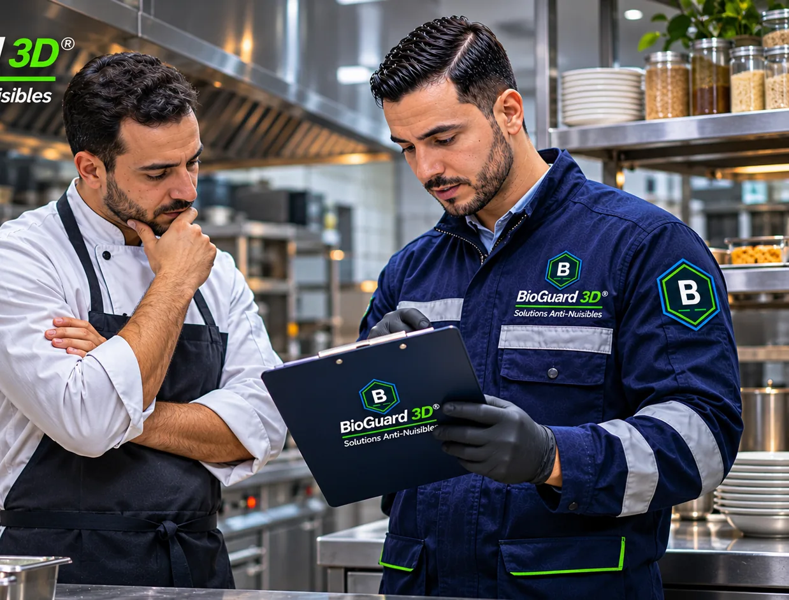

Évaluation des risques
Identifier les nuisibles, les accès, les zones sensibles et les contraintes du site.
BIOGUARD 3D · Notre démarche qualité
Une démarche structurée pour maîtriser les risques liés aux nuisibles et documenter les prestations réalisées dans votre établissement.

Notre méthode
Identifier les nuisibles, les accès, les zones sensibles et les contraintes du site.
Privilégier les mesures préventives et sélectionner, lorsque nécessaire, des produits autorisés pour l’usage concerné, conformément à leurs conditions d’emploi.
Communiquer les consignes de sécurité, protéger les zones sensibles et adapter les modalités à l’activité du client.
Consigner les observations et proposer les mesures correctives et les contrôles adaptés.
Documentation professionnelle
Selon la prestation convenue : compte rendu d’intervention, attestation de passage réellement effectué, recommandations préventives et informations relatives aux produits utilisés. Les justificatifs applicables peuvent être demandés avant contractualisation.
Pour les établissements alimentaires, ces éléments peuvent contribuer à la démarche de maîtrise des nuisibles, sans remplacer les obligations propres à l’exploitant ni constituer une certification ONSSA ou HACCP.
Précisez votre activité, votre ville, les zones concernées et les documents attendus.
Demander des informationsUn accompagnement adapté aux besoins de votre établissement.